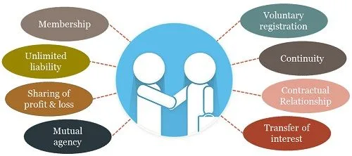
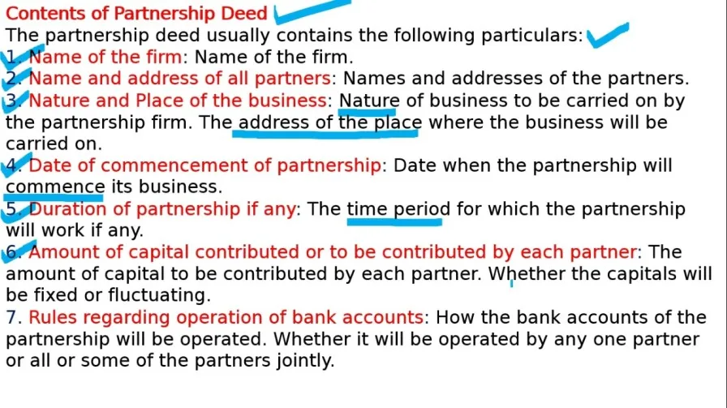
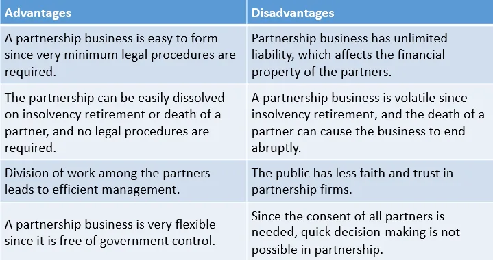
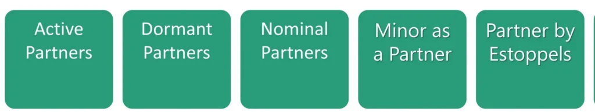
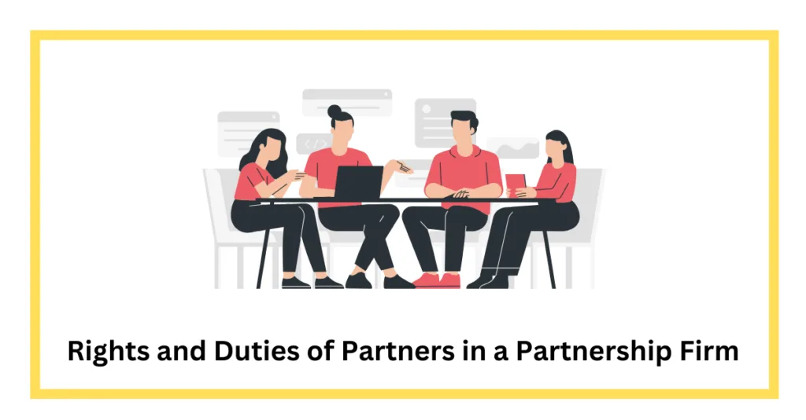

Expanded Nursing Uganda Explanation
Partnerships should be understood beyond a short definition. Link the concept to patient history, focused assessment, common risks, nursing priorities, documentation and evaluation of outcomes.
01 Partnership
Partners share the profits and losses of the business. This is the relations between two or more persons who have agreed to share profits of business carried on by all or any one of them acting for all. It may consist of two to twenty members except for banking where the law provides that the maximum number should be ten.
A partnership is guided by a partnership deed or a partnership act under the laws of the republic of Uganda.
There are two main types of partnerships:
- General Partnership : In a general partnership, all partners have unlimited liability.
- Limited Partnership : In a limited partnership, only the general partners have unlimited liability. Limited partners have limited liability, meaning they are only liable for the amount of money they have invested in the business.
Example: A law firm owned and operated by two or more lawyers, A construction company owned and operated by two or more individuals, A retail store owned and operated by two or more people.
02 Characteristics of Partnership
- It is formed with a minimum of two and a maximum of twenty persons.
- Capital is contributed by all the partners in agreed proportions.
- Profits and losses are shared by partners in agreed proportions.
- Any act or agreement made by an individual partner in the name of the partnership binds all the partners.
- The burden of running the business is shared by the partners.
- Unless specified in the partnership deed, the liability of the partner is unlimited.
- Transfer of ownership and admission of a new partner is by the consent of all the partners.
03 Ways of Formation
- A partnership is formed by mutual agreement, which may be oral or in writing.
- Partnership Deed: On forming a partnership, an agreement is reached by the partners and put in writing. Such a written agreement among partners pertaining to the terms and conditions of their business is called a partnership deed or partnership agreement.
04 Contents of a Partnership Deed
A partnership deed is a legally binding agreement that outlines the terms of a business partnership.
- The nature of the business to be conducted
- The capital of the firm and the proportions to be contributed by each partner
- The ratios in which profits and losses will be shared
- The rate of interest to be allowed on capital or charged on drawings
- The amounts, if any, partners may draw in advance before ascertainment of profits.
- Partners’ salary, if any
- Preparations and auditing of accounts
- Admission of new members
- Duration of partnership.
- Regulations in case a member gets problems like death, insanity, among others.
05 Advantages of Partnership
- A partnership has access to more capital than a sole trader since up to 20 persons can contribute.
- It brings together people with different skills and therefore it can have a wide range of experience and ability, which encourages specialization.
- Partners are not overworked since work may be shared among all partners. This reduces the workload for each partner.
- A partnership finds it easier to obtain a loan from the bank or trade credit from suppliers to extend on their businesses unlike a sole trade.
- Forming a partnership is fairly simple since there are no legal documents required, with the exception of registration.
- In case of any difficulty in business, people can sit at a round table and come up with a solution unlike a sole trader who has no one to consult.
- The partnership business can easily be expanded since new partners can be admitted in case there is a need for money.
- Losses and liabilities are shared among many unlike a sole trader who takes up the whole burden alone.
- The business may not easily collapse in case of death or retirement of a partner. This improves continuity.
- Business secrets can be kept since it is not compulsory for partnership to publish their accounts and reports.
- Ease of formation
- Flexibility in management
- Larger resource/capital pool
- Spread of risks and combined abilities
- Capacity for survival
- Prompt decision making
- Broader management base
- Legal protection
- Form of employment opportunity.
06 Limitations/Disadvantages of a Partnership
- There is unlimited liability to the partners as the partners are all liable to the debts of the firm.
- If one person makes a bad decision, makes a mistake, or any misconduct by a partner, it affects all partners, i.e., all partners have to suffer the consequences.
- Since all major decisions must be taken by the consent of all partners, decision making and implementation may delay, sometimes resulting in failure to take advantage of an urgent deal.
- Unlike a sole trader who is alone in business, partners are liable to disagree over certain business issues, which may retard the business’s progress.
- If one partner works hard, the profits arising out of his labor are shared by all the partners. This often kills one’s morale to work harder.
- Individual’s shares, interest or membership cannot freely be transferred to any outsider without the consent of the other partners.
- Often the partnership relies on one or a few partners; if they leave or die, the firm can easily collapse.
07 Kinds of Partners
1. Active partners –The partners who actively participate in the day-to-day operations of the business are known as active or working partners. They contribute capital and are also entitled to share the profits of the business. They are also liable for the debts of the firm. E.G John and Mary are active partners in a construction company. They are both involved in the day-to-day operations of the business, such as managing projects, hiring and firing employees, and making financial decisions. They are also both personally liable for the debts of the company.
2. Dormant partners/ Sleeping Partners – Those partners who do not participate in the day-to-day activities of the partnership firm are known as dormant or sleeping partners. They only contribute capital and share the profits or bear the losses, if any. E.G Sarah is a dormant partner in a retail store. She has invested money in the business, but she is not involved in the day-to-day operations. She is still liable for the debts of the company, but she does not have any say in how the business is run.
3. Nominal partners/Quasi partners – These partners only allow the firm to use its name as a partner. They do not have any real interest in the business of the firm. They do not invest any capital or share profits and also do not take part in the conduct of the business of the firm. However, they remain liable to third parties for the acts of the firm. Get something like a goodwill for using their name. E.G Jose Chameleone, is a nominal partner in a clothing store. He does not have any money invested in the business, but he allows the store to use his name and image to promote their products. He is liable for the debts of the company, but he does not have any say in how the business is run.
4. Minor partners – You know that a minor is a person under 18 years of age who is not eligible to become a partner. However, in special cases, a minor can be admitted as a partner with certain conditions. A minor can only share the profit of the business. In case of loss, his liability is limited to the extent of his capital contribution to the business. Their decisions are not binding legally. E.G A 16-year-old student, John, is a minor partner in his father’s hardware store. He helps out in the store on weekends and during school holidays. He is not liable for the debts of the company(exceeding his capital contribution), and his decisions are not legally binding.
5. Partners by estoppels – If a person falsely represents himself as a partner of any firm or behaves in a way that somebody can have an impression that such person is a partner and based on this impression transacts with that firm then that person is held liable to the third party, the person who falsely represents himself as a partner is known as a partner by estoppels. E.G. If Robert represents himself as a partner in a law firm, even though he is not actually a partner. He meets with clients and discusses their cases, and he signs contracts on behalf of the firm. He is liable to the clients for any damages they suffer as a result of his actions.
6. Sub partners – gets some share of profit from one of the partners. He is a partner to one of the partners of the partnership. E.G Janet is a sub-partner in a catering business. She is not a partner in the business itself, but she has a contract with one of the partners to receive a share of the profits. She is not liable for the debts of the business.
7. The general partner – has unlimited liability for the firm’s debt. E.G David is a general partner in a construction company. He is personally liable for all of the debts of the company, even if the company goes bankrupt.
08 Rights of a Partner in Partnership Business:
- Participate in day-to-day management.
- Be consulted and heard in decision-making.
- Access books of accounts and request copies.
- Share profits equally or as agreed.
- Receive interest on capital contributions and advances.
- Be indemnified for payments, liabilities, and losses incurred for the firm.
- Use partnership property exclusively for business purposes.
- Act as an agent of the firm and bind it through authorized actions.
- Continue as a partner unless ceasing under specific conditions.
- Retire with consent and according to partnership deed terms.
- Receive rights as an outgoing partner or legal heir of a deceased partner.
JOINT STOCK COMPANIES
Click Here
09 Nursing Uganda Clinical Lens
Use Partnerships as a practical nursing topic, not only a memorized definition. Translate theory into safe decisions, accountability, communication and service improvement.
- What to understand first: define partnerships, identify the normal or expected pattern, then explain what changes when the patient is unwell.
- Why it matters in care: the nurse must recognize risk early, explain findings clearly, document accurately and know when to escalate.
- How to revise it: connect each point to assessment, nursing diagnosis or care problem, intervention, rationale and evaluation.
10 Assessment Guide
- The problem, stakeholders, available resources, policy requirements and ethical issues.
- Risks to patients, staff, confidentiality, quality, costs and continuity.
- Documentation, reporting lines, supervision and evaluation measures.
11 Nursing Priorities, Rationales and Outcomes
- Use evidence, policy and professional standards to guide action.
- Communicate clearly, document decisions and protect confidentiality.
- Evaluate whether the action improves safety, learning or service delivery.
The rationale for these priorities is patient safety: nursing actions should prevent deterioration, reduce discomfort, support recovery and create clear evidence for the next caregiver.
- Expected outcome: The plan is documented, realistic, ethical and improves patient care or learning outcomes.
12 Patient Teaching and Revision Check
- Explain partnerships in simple language the patient or caregiver can repeat back.
- Teach warning signs, medicine or follow-up instructions, hygiene or lifestyle points where relevant.
- For exams, prepare a short answer using: definition, causes or risk factors, signs, assessment, management, complications and prevention.
- For ward practice, document baseline findings, actions taken, patient response and the plan for review.
Illustrations and Diagrams (6)





Related Video Lectures
Watch nursing lecture videos on YouTube for this topic. Opens in a new tab.
Watch on YouTubeExternal link: YouTube may use its own cookies and terms. Nursing Uganda is not affiliated with YouTube.